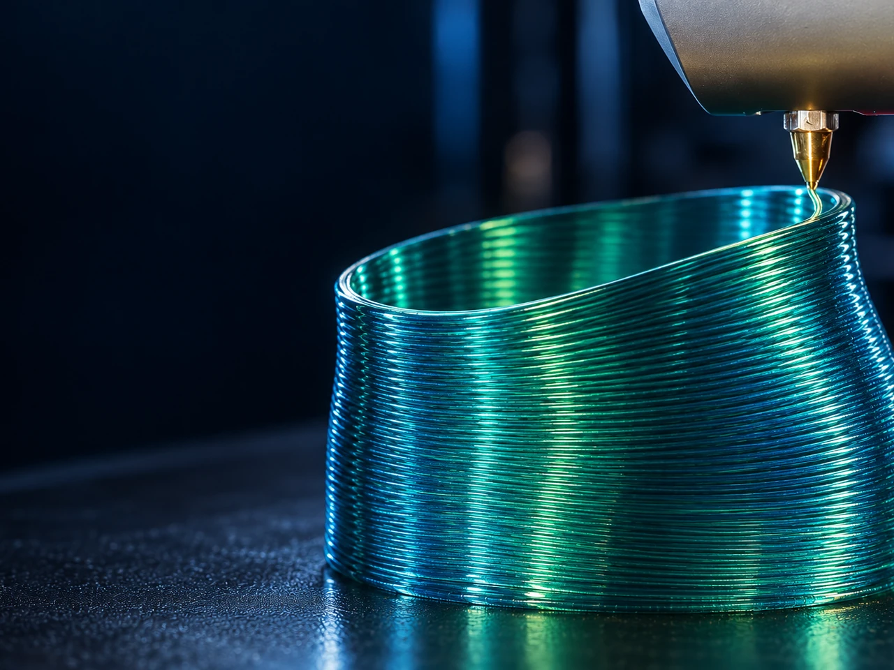

Lokale Schichtorientierung
Auftragsrichtung an die Bauteilgeometrie anpassen, statt eine globale Baurichtung zu verwenden.
Auftragsstrategien untersuchen, bei denen die Schichtorientierung zu einer Fertigungsvariable wird.
MYCNC3D untersucht experimentell nicht-planare und multiplanare Verfahren, um die geometrischen Möglichkeiten zu erweitern und die Einschränkungen eines global planaren Slicings zu verringern.

Projektüberblick
Physischer nicht-planarer Druck wurde auf repräsentativer FDM-Hardware demonstriert. MYCNC3D untersucht Auftragsstrategien, bei denen die Schichtorientierung eine gezielt einstellbare Fertigungsvariable statt einer festen globalen Vorgabe ist.
Die Forschung konzentriert sich auf lokale Auftragsorientierung, geneigte und gekrümmte Bahnen, Überhangfähigkeit, Oberflächenkontinuität und die durch Düse und Werkzeugkopf vorgegebenen Freigänge. Eine mathematisch gültige Bahn ist nicht automatisch fertigungstauglich.
Deshalb werden erzeugte Bahnen in physischen Druckversuchen auf praktische Grenzen hinsichtlich Neigung, Krümmung, Extrusionsstabilität und Maschinenfreigang geprüft. Aktuelle Experimente sollen erfolgreiche Demonstrationen in wiederholbare und wiederverwendbare Fertigungsstrategien überführen.
Warum dieses Thema wichtig ist
Eine mathematisch gültige nicht-planare Bahn kann wegen Kollisionen mit dem Werkzeugkopf, unzureichendem Düsenfreigang, zu großer lokaler Neigung oder ungeeigneter Extrusionsbedingungen trotzdem nicht herstellbar sein.
Die Forschung verbindet deshalb Geometrie mit Fertigbarkeit.
Aktueller Schwerpunkt
Auftragsrichtung an die Bauteilgeometrie anpassen, statt eine globale Baurichtung zu verwenden.
Untersuchen, wie geneigte oder gekrümmte Bahnen Stützbedarf und zugängliche Geometrien verändern.
Kontinuierliche Bahnen untersuchen, die einer Oberfläche statt einer gestuften Ebenennäherung folgen.
Praktische Grenzen von Düse, Heizblock und Werkzeugkopf bestimmen.
Bahngeometrien ermitteln, die mit stabilem Materialauftrag druckbar bleiben.
Erzeugte Trajektorien mit realen Druckergebnissen vergleichen.
Technischer Ansatz
Der Forschungszyklus verbindet Geometrieerzeugung, Bahnprüfung, Maschinenvorbereitung und kontrollierte Druckversuche. Die Ergebnisse verfeinern Freigangsregeln, Neigungsgrenzen und Auftragsstrategien.
Aktueller Stand
Physischer nicht-planarer Druck wurde demonstriert. Der aktuelle Schwerpunkt liegt darauf, erfolgreiche Versuche in wiederholbare und wiederverwendbare Fertigungsregeln zu überführen.
Nächster Meilenstein
Der nächste Meilenstein ist ein Satz wiederholbarer Regeln zur Bahngenerierung und zum Maschinenfreigang, der für mehrere Geometrien statt nur für einzelne Testteile gilt.
Der Übergang zu IN ENTWICKLUNG erfordert definierte Grenzen für Neigung, Krümmung und Werkzeugfreigang, weniger manuelle Korrekturen und wiederholbare physische Ergebnisse.
Integrierte Plattform
Non-planarer und multiplanarer Materialauftrag wird gemeinsam mit den anderen Technologien der MYCNC3D-Plattform entwickelt.
Zusammenarbeit
MYCNC3D interessiert sich für den Austausch mit Forschenden, Softwareentwicklern, Maschinenherstellern und Industrieanwendern, die nicht-planare oder multiplanare additive Fertigung untersuchen.